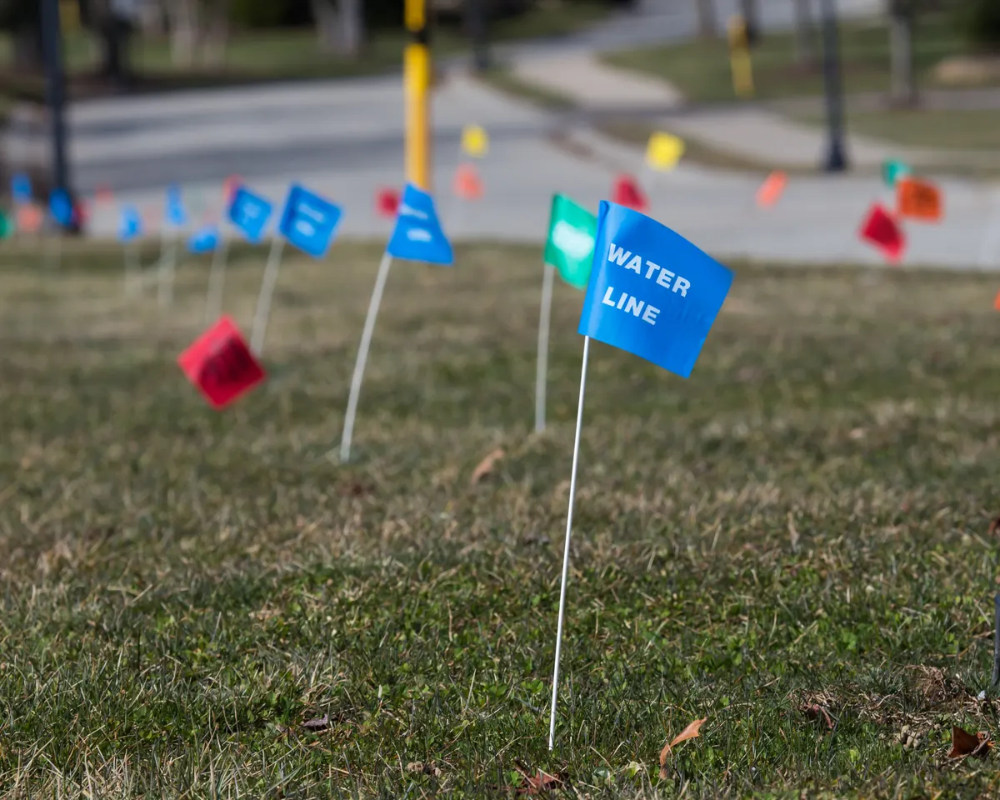

If you've ever seen spray paint or small colored flags on the ground before a project starts, those markings are there for a reason. Utility workers use a standardized color system to identify what may be buried below the surface, helping contractors, plumbers, and property owners avoid damaging critical service lines.

Understanding these markings can help you better protect your property and know when it's time to call in a professional. When a water or sewer line fails, Angle Stop Plumbing is here to help with the repair, replacement, and guidance you need.
What the Different Utility Marking Colors Mean
Before excavation begins, utility locators mark underground lines using specific colors. Each color represents a different type of service.
- Red marks electric power lines, cables, conduit, and lighting cables.
- Yellow marks gas, oil, steam, petroleum, or other gaseous materials.
- Orange marks communication, alarm, signal lines, cables, or conduit.
- Blue marks potable water lines.
- Green marks sewer lines and drain lines.
- Purple marks reclaimed water, irrigation, and slurry lines.
- Pink marks temporary survey markings.
- White marks the proposed area of excavation.
These markings give crews a safer starting point before digging, trenching, boring, or performing repairs. They are not just paint on the ground - they are an important warning system.
Why These Markings Are So Important
Underground utilities are easy to forget about until something goes wrong. A damaged utility line can lead to serious safety hazards, expensive repairs, property damage, and service interruptions.
When water or sewer lines are involved, the consequences can quickly become disruptive. A broken water line can affect pressure, create pooling, and waste large amounts of water. A damaged sewer line can lead to slow drains, foul odors, soggy ground, or even sewage backup.
That is why proper locating and marking matter so much before any digging starts. Knowing what is below the surface helps prevent avoidable damage and makes repairs more accurate and efficient.
Water Line Failures: What Property Owners Should Watch For
Water lines do not always fail all at once. In many cases, there are warning signs that something underground is starting to go wrong.
Common signs of a water line problem include:
- Unexplained spikes in your water bill
- Wet spots in the yard
- Low water pressure
- Discolored water
- The sound of running water when no fixtures are on
If you notice any of these issues, it may point to a damaged or leaking water service line. Acting quickly can help reduce further damage and keep repair costs from growing.
Sewer Line Failures: Early Signs You Should Not Ignore
Sewer line issues can become messy fast, and the earlier they are identified, the better.
Watch for signs such as:
- Frequent drain backups
- Multiple drains moving slowly at once
- Sewage odors in or around the property
- Extra-green or soggy patches in the yard
- Gurgling sounds from toilets or drains
These symptoms may indicate a failing sewer line, blockage, break, root intrusion, or collapse. Problems below ground often require professional diagnosis and repair.
How Angle Stop Plumbing Can Help
When underground water and sewer lines fail, you need a plumbing company that understands both the urgency of the problem and the complexity of underground service work. Angle Stop Plumbing is here to help identify the issue, explain the next steps clearly, and provide the repairs needed to restore service.
Our team can help with:
- Diagnosing water and sewer line problems
- Locating likely failure points
- Repairing damaged water lines
- Repairing or replacing failing sewer lines
- Helping property owners respond quickly to underground plumbing emergencies
We know that underground line problems can feel overwhelming. Our goal is to make the process as straightforward as possible, with professional service and solutions built around protecting your property.
Do Not Ignore the Markings - Or the Warning Signs
Those colored markings on the ground are more than construction paint. They are a map of the essential systems running below your property. Understanding what they mean can help you stay informed, avoid damage, and act quickly when a problem affects your water or sewer service.
If you are dealing with a failed water line, sewer line issue, or signs of underground plumbing trouble, Angle Stop Plumbing is ready to help.
Call Angle Stop Plumbing for Water and Sewer Line Repairs
When underground plumbing problems strike, fast action matters. If you are seeing signs of water or sewer line failure, contact Angle Stop Plumbing for professional help diagnosing and repairing the problem before it gets worse.